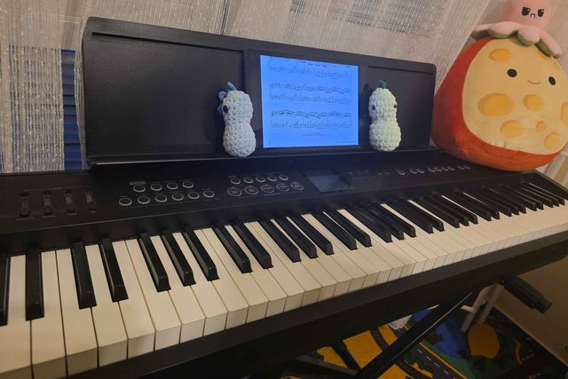

Jak jsem začal
Na klavír jsem začal hrát koncem května v roce 2023. Důvodů bylo několik. Chtěl jsem se naučit hrát na hudební nástroj a se začátkem letních prázdnin byl i dobrý čas něco začít (a něco nového se naučit). Zároveň jsem chtěl utratit své první vydělané peníze z brigády za něco, co by vydrželo dlouhodobě. Dnes už hraji 3 roky (ačkoliv s přestávkami) a doufám, že mi to ještě pár let vydrží.
Jak cvičím
Učím se sám, převážně z YouTube a z not (i když čtení not je pro mě pořád náročné). Dříve jsem cvičil každý den (i pár hodin), dnes už jen o víkendech, když si na to najdu čas. Doufám ale, že až škola trochu poleví, pustím se do cvičení zase naplno.
Repertoár
| Skladba | Skladatel | Stav |
|---|---|---|
| River Flows in You | Yiruma | umím |
| Someone You Loved | Lewis Capaldi | umím |
| Anime openings | různí | v plánu (naučit se všechny) |